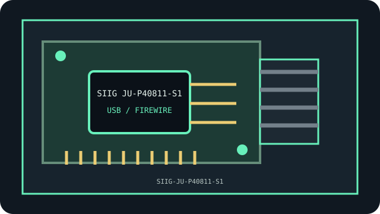

[ INDIVIDUAL COMPONENT // USB / FIREWIRE ]
SIIG JU-P40811-S1
USB Type-A SuperSpeed 10Gb/s; count/power by SKU. This model-specific archival record distinguishes documented product facts from platform-level compatibility assumptions.

MODEL SCOPE: Sonnet Allegro Pro USB 3.2 PCIe. Confirm board revision, exact product label, firmware, bracket, and accessories before installation.
Reference specifications
| Model identifier | SIIG JU-P40811-S1 |
|---|---|
| Host bus | PCIe 2.0 x4 |
| Interfaces and protocols | Four dedicated USB 3.0 (5 Gb/s) ports, up to 20 Gb/s aggregate; four external Type-A ports. |
| Controller / chipset | Renesas μPD720202 USB 3.0 controller. |
| Driver and operating-system notes | Standard USB xHCI support; card is bus/auxiliary SATA powered as manufacturer specifies. |
| Compatibility and archival notes | Four dedicated channels and low-profile bracket; verify the exact board, auxiliary power and OS support. |
Compatibility, care & archival notes
- Match exact SKU before assuming port count/power; verify x4 electrical link and board revision.
- Record PCB/revision identifiers, subsystem IDs, firmware and supplied accessories; OEM and retail versions may differ.
- Retain a verified backup and known-good driver/firmware before changing a working legacy configuration.
Sources & further reading
- Manufacturer — Sonnet Allegro Pro USB 3.2 PCIe product referenceVendor reference for the named model or family; confirm exact revision and current archived manual.
- PCI-SIG — PCI Express specificationsBus terminology; physical slot fit does not guarantee electrical compatibility.
- Linux kernel — PCI support documentationGeneral enumeration reference, not a promise of support for every device feature.